SINCE 2006 · BATU PAHAT
小学安亲 · 小学补习 · 中学补习一站式学习系统
學而思补习学院把课后照顾、全科补习、资料研发、考试训练和家长回报放进同一个系统，让孩子每天都有清楚节奏，也让家长更安心。
BP 本地家长更需要的是稳定跟进
安亲照顾、全科补习、考题资料、老师回报，集中在同一套系统里推进。
HIGH PEAK EDUCATION CENTRE
學而思补习学院
Batu Pahat · Since 2006
WHY PARENTS TRUST HIGH PEAK
唯一一间荣获3大奖项的教育机构
我们的核心是品质，我们的使命是教育。
學而思，老师好，资料好，服务好
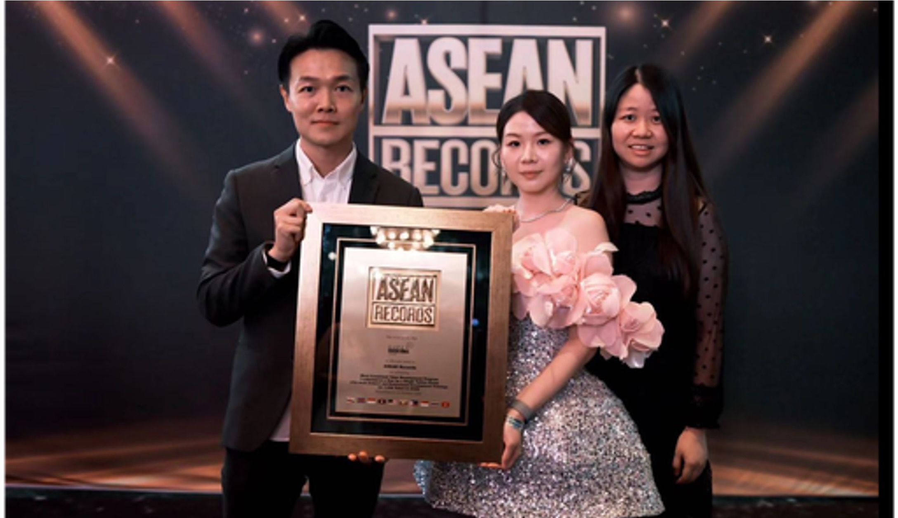
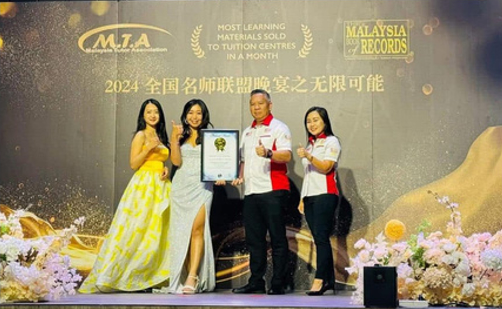
ASEAN RECORD
全马最多的教师培训
成功举办了 154 场培训，赋能了 1048 位导师。
成功举办了 154 场培训，赋能了 1048 位导师。
资料品质创下马来西亚记录大全。
荣获亚太顶级卓越品牌大奖。
唯一一间敢对您
5大品质承诺
的补习学院【學而思补习学院】
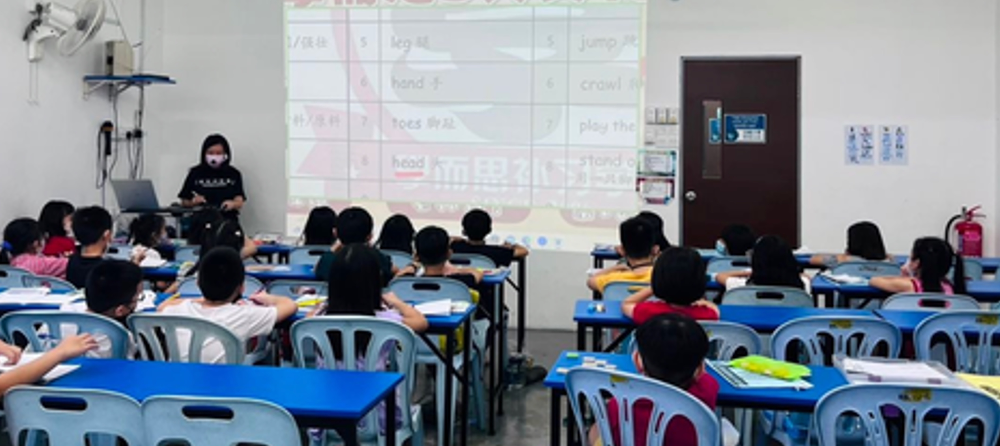
01
上课
我们每堂课都是 1 小时 30 分钟确保上课品质绝不偷工减料。
假期不停学 · 100% 实体课
02
师资
固定团队 · 全职专业 · 定期培训我们的教师团队常年固定，全职专业教师，定期培训，有许多 MASTER 毕业老师。
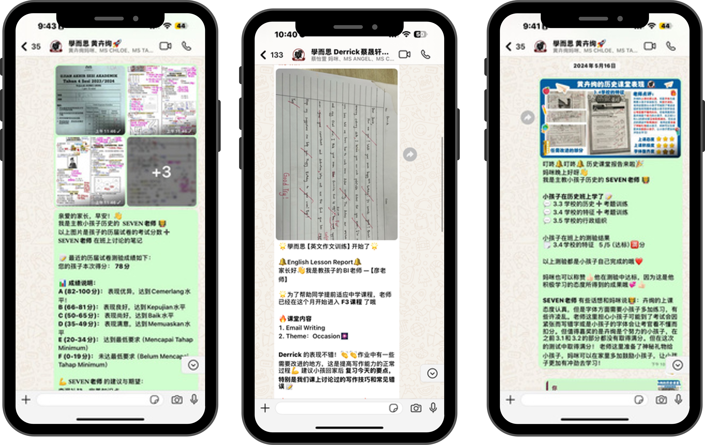
03
亚太服务品质奖
我们会固定向家长报告孩子学习情况CALLBACK & WHATSAPP 和院访。
ASIA PACIFIC EXCELLENCE BRAND TOP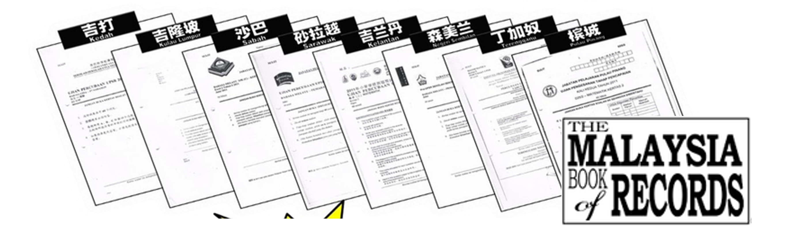
04
得奖资料
资料品质创下马来西亚记录大全吉打、吉兰丹、沙巴、砂拉越、吉兰丹、森美兰、丁加奴、槟城资料系统持续研发。
THE MALAYSIA BOOK of RECORDS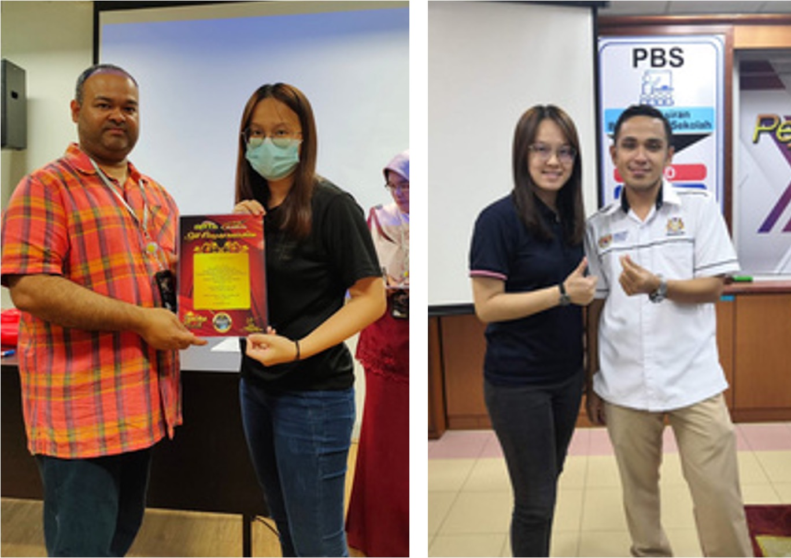
05
最新格式
长期跟教官与学校老师交流我们长期跟教官与学校老师交流，获取最新格式资讯。
PARENT DECISION FLOW
透明、清晰的入学流程，让您从第一天起就对孩子的学习安排了如指掌
孩子适合安亲、全科补习、单科加强还是考试冲刺，先不用自己猜；我们会按阶段、分行与学习状态协助判断。
看孩子阶段
学前、小学低年级、小学高年级、中学/SPM，先确认孩子目前最需要的学习路线。
匹配附近分行
按 SUMMIT、华中、王国、中江四间分行，确认地点、载送与时间安排。
主要老师咨询
专属课程顾问（Seven / Joyi / Apple 老师）将协助说明课程、试课与安亲安排，家长不用分散找人。
试听后持续跟进
进入课程后，老师会继续跟进孩子基础、功课、练习、考试训练，并定期向家长反馈孩子的学习进展。
已经知道大方向？选择最靠近您的分行，让课程顾问帮您判断最适合的课程。
PROGRAM ROADMAP
从学前到 SPM，孩子每个阶段都有清楚路径
课程不是零散科目，而是按年龄、考试格式与学习能力逐步衔接。
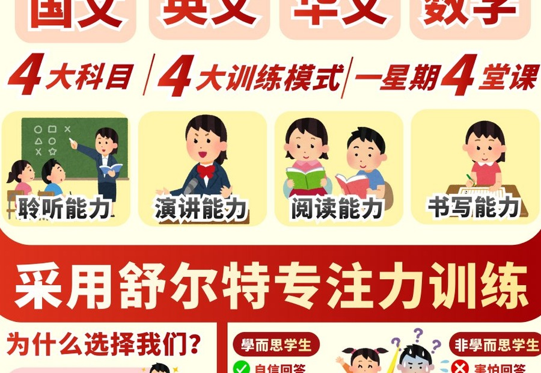
5-6 岁
学前基础
国文、英文、华文、数学，训练聆听、演讲、阅读、书写与专注力。
- 四大语文能力启蒙
- 一年掌握基础词汇
- 专注力与课堂习惯训练
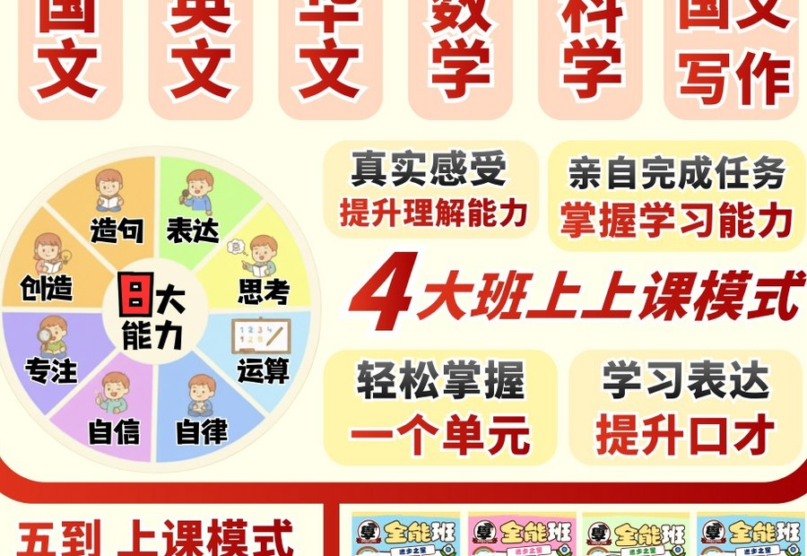
Year 1-3
小学低年级全能班
国英华数科与写作训练，帮助孩子建立学习习惯与表达能力。
- 五到上课模式
- 功课与基础同步跟进
- 语文表达和逻辑启蒙
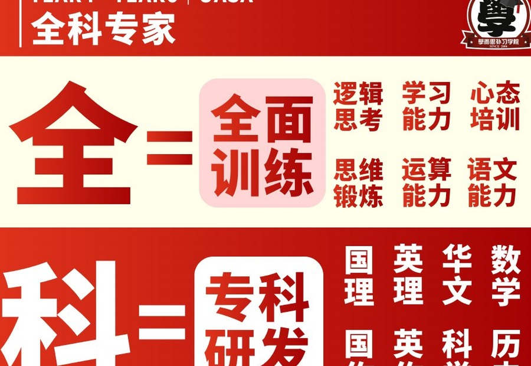
Year 4-6 · UASA
小学高年级全科专家
理解、作文、数学、科学、历史全面训练，衔接 UASA 考试要求。
- 13 州考题趋势
- 写作与理解双线提升
- UASA 答题格式训练
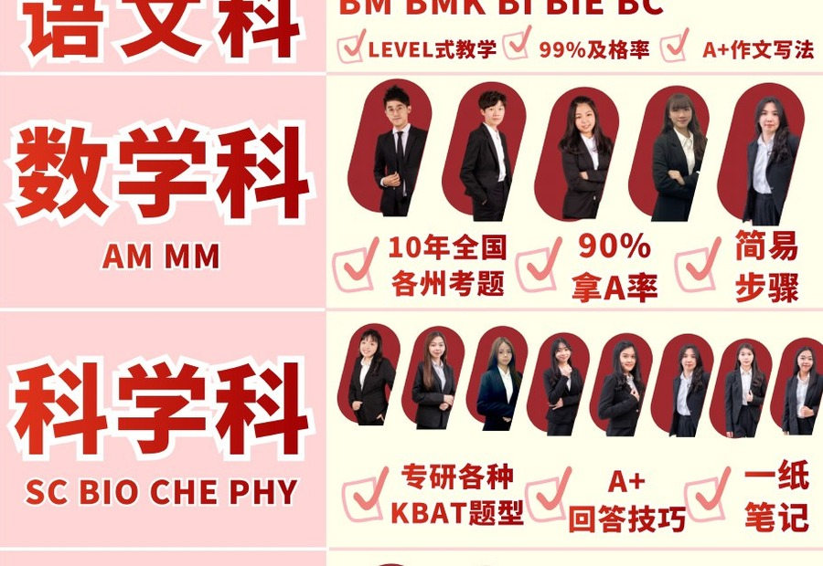
Form 1-5 · SPM
中学 14 科系统补习
BM、BI、BC、MM、AM、SC、BIO、CHE、PHY、SEJ、GEO、PA 等科目系统提升。
- SPM / UASA 分层教学
- KBAT 与 A+ 答题技巧
- 一纸笔记与考题攻略
COURSE MATCH
不确定孩子适合哪一类课程？先按阶段快速判断
选择孩子现在的年级阶段，页面会立即整理建议路线、训练重点和最适合联系的老师。
先建立语言、数学与专注力基础
适合准备进入小学、需要建立课堂习惯与三语基础的孩子。
- 国英华数启蒙
- 聆听、阅读、书写与表达
- 专注力和课堂习惯
AFTER SCHOOL CARE
校后安亲，不只是看顾，而是把一天的学习收好
从学校载送到功课监督、专业补习与开心回家，家长把课后交给系统，孩子把习惯慢慢建立起来。
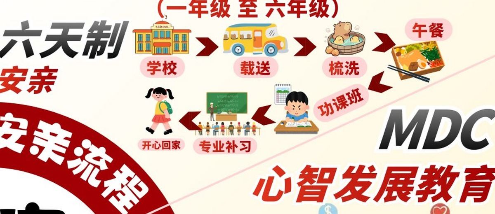
区域载送安排，减少家长接送压力。
整理状态，让孩子从学校节奏转换到课后学习。
老师监督功课，帮助孩子当天完成、当天订正。
接入學而思课程系统，完成重点复习与科目训练。
培养责任感、相处能力、感恩、好学态度与道德价值观。
让孩子带着完成感回家，让家长更安心。
LEARNING METHOD
让孩子愿意学，也让重点记得住
學而思把考试训练、趣味理解与心智发展结合起来，帮助孩子从“不懂”走到“会做”。
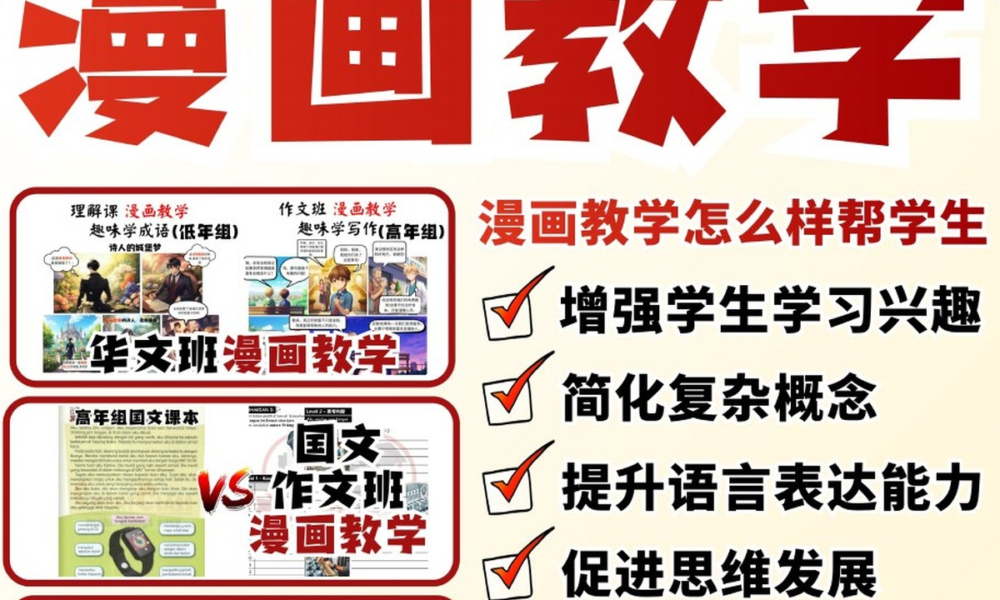
漫画教学
把复杂概念视觉化，提高兴趣、表达力、思维发展与记忆力。
- 概念变画面
- 降低学习压力
- 提升课堂互动
Newton Memory
结合旋律、口诀、图像、故事与概念记忆，让重点更容易进入长期记忆。
- 旋律记忆法
- 口诀记忆法
- 图像与故事记忆
MDC 心智发展
培养相处能力、责任感、感恩、好学态度与道德价值观。
- 责任感培养
- 学习态度建立
- 行为习惯引导
48 TEACHERS DIRECTORY
完整老师团队，按专研方向认识每一位老师
老师卡片保留 IG 入口，让家长先认识老师风格；预约与报名统一通过学院 WhatsApp。
点击任何老师卡片
查看老师介绍、成就、身份与 IG 档案；预约报名仍统一由学院 WhatsApp 协助。
全部老师
48 位老师
REAL CAMPUS LIFE
真实活动与环境，让学习不只发生在课本里
假期活动、工作坊、户外体验与亲子活动，让孩子在课程之外也有成长记忆。
PARENT VOICES
家长安心，不是因为一句承诺，而是看见孩子真的有改变
从功课习惯、考试信心、课堂态度到回家后的状态，學而思把家长最在意的细节一件一件跟进。
孩子以前放学后功课常常拖到晚上，现在在安亲班已经有老师监督和订正，回家后亲子时间轻松很多。
功课习惯稳定下来 常见反馈 · 匿名整理老师会告诉我们孩子弱在哪里，不只是上课而已。资料和练习有方向，孩子面对考试比较不慌。
复习更有方向 常见反馈 · 匿名整理孩子以前觉得数学和科学很难，现在比较愿意问问题，也知道答题步骤要怎样写，信心明显提升。
从怕考试到敢尝试 常见反馈 · 匿名整理载送、安亲、补习可以在同一个系统里安排，对我们来说真的省心。最重要是老师会持续跟进孩子状态。
安排省心，跟进清楚 常见反馈 · 匿名整理
家长最常反馈的三个关键词
安心 · 有系统 · 看得到进步
PARENT FAQ
预约前，家长最常问的几个问题
如果你还不确定孩子适合安亲、补习还是考试加强，可以先看这里，再联系三位主要老师安排试听。
孩子基础比较弱，可以跟得上吗？
可以。學而思会先看孩子的年级、科目基础和学习习惯，再安排适合的课程路线。基础弱的孩子会先补概念、格式和习惯，不会一开始就只追速度。
安亲班只是看功课吗？
不是。安亲包含学校载送、梳洗午餐、功课监督、订正跟进、专业补习和心智发展，让孩子把放学后的学习节奏稳定下来。
小学和中学课程有什么分别？
小学更重视基础、学习习惯、UASA 答题格式和语文表达；中学会加入 SPM/UASA 考题趋势、科目分层、KBAT 与答题步骤训练。
家长会知道孩子的学习进度吗？
会。老师会通过日常跟进、WhatsApp 回报、Callback 或院访，让家长知道孩子哪里进步、哪里还需要加强。
我要怎样预约试课或询问分行？
可以直接联系三位主要老师：MR SEVEN 负责王国区，MS JOYI 负责华中/中江区，MS APPLE 负责 SUMMIT 区。页面顶部、底部和手机浮动按钮都可以直接 WhatsApp。
BRANCHES & ADVISORS
四间分行，统一系统；三位主要老师，协助家长找到适合课程
每间分行都有独立 IG 与 WhatsApp 联系入口，家长可以按地点联系，也可以通过主要老师了解课程安排。
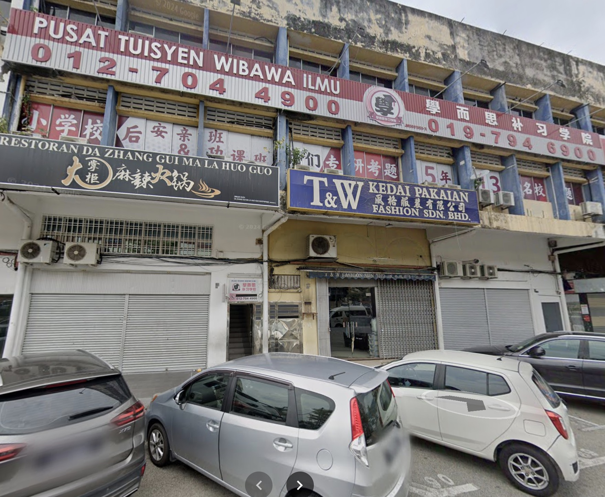
SUMMIT 区
High Peak Education Centre
101A, Jalan Cengal, Taman Makmur, 83000 Batu Pahat, Johor Darul Ta'zim
012-704 4900 · 019-794 6900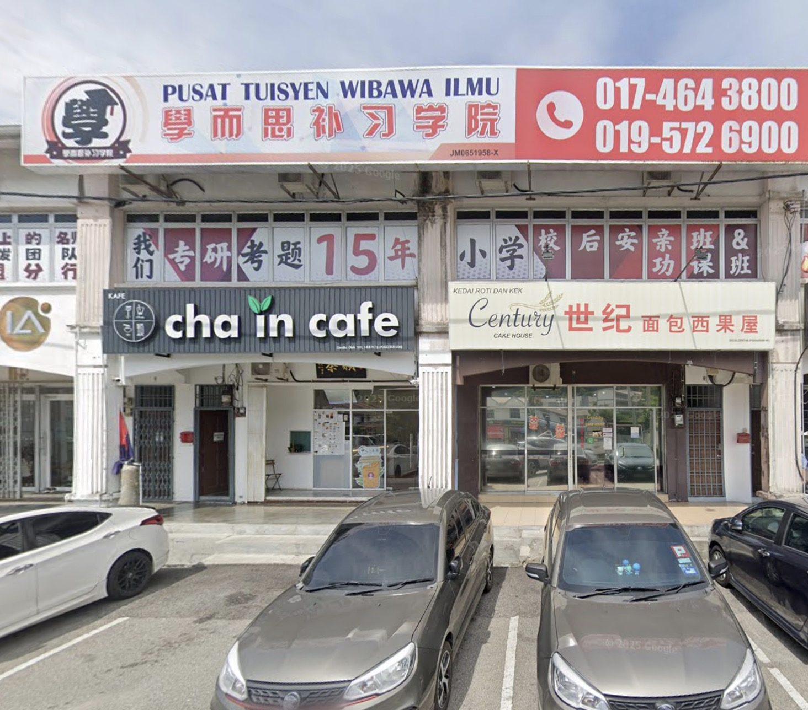
华中区
學而思补习学院 - 华中对面
17A, Jalan Orchard Heights 1, Taman Orchard Heights, 83000 Batu Pahat, Johor Darul Ta'zim
017-464 3800 · 019-572 6900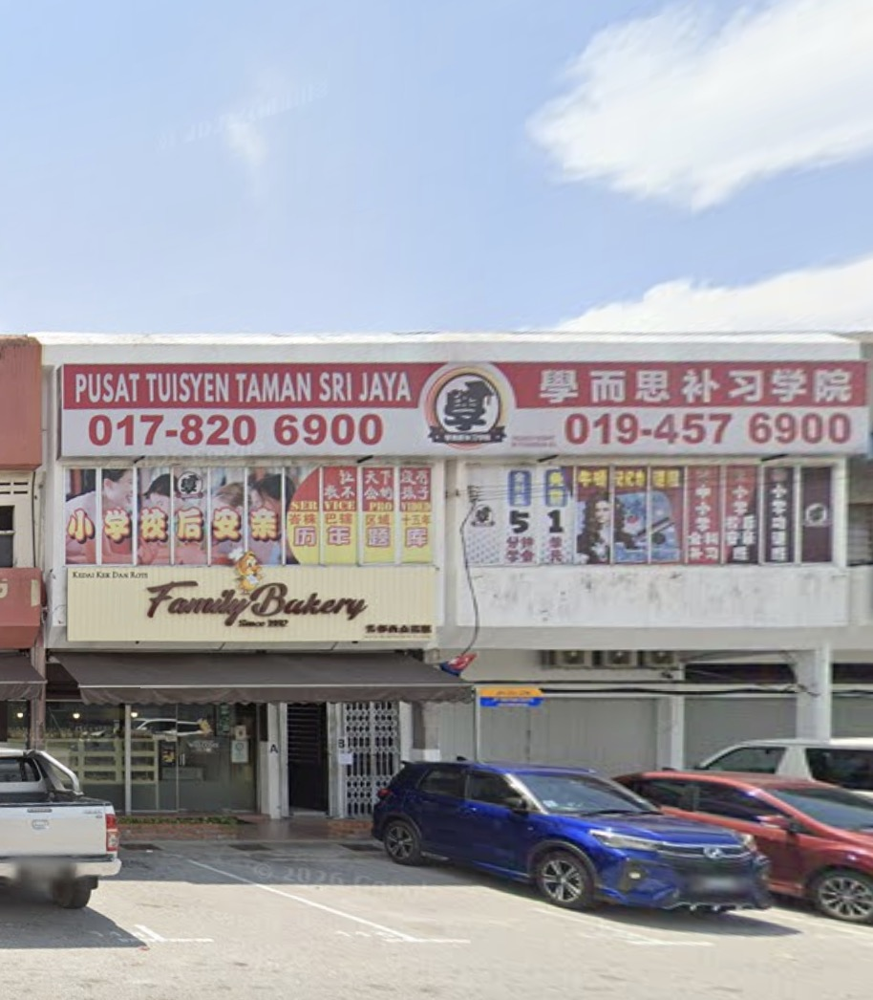
王国区
學而思补习学院 - 王国分行
102A, Jalan Rotan Batu, Taman Sri Jaya, 83000 Batu Pahat, Johor Darul Ta'zim
019-457 6900 · 017-820 6900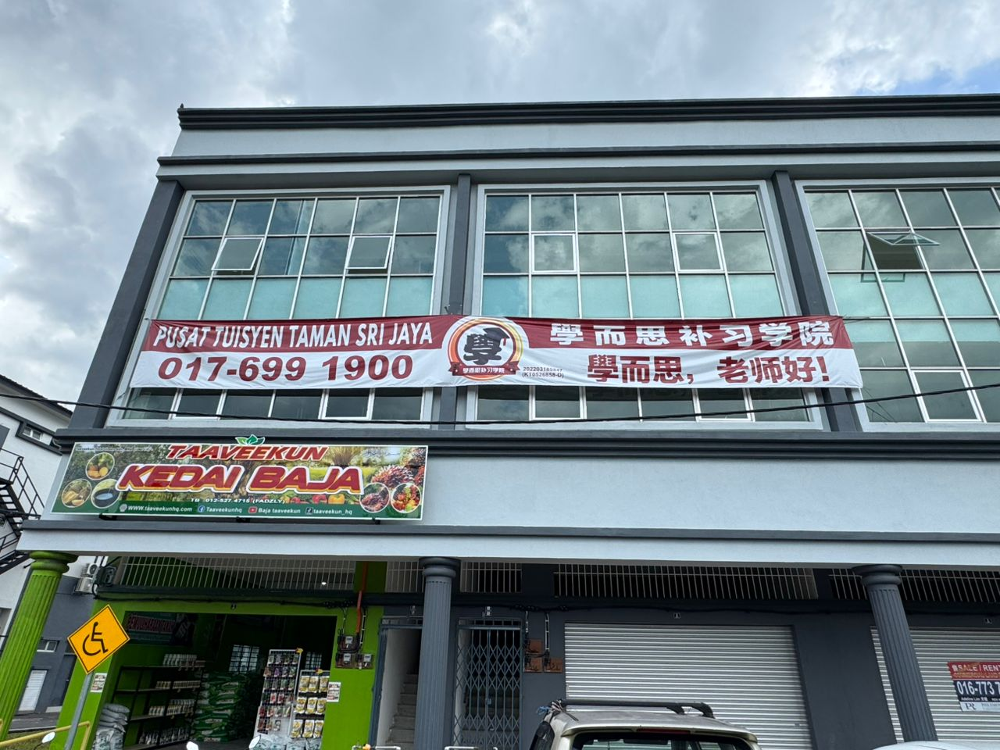
中江区
學而思补习学院 - 中江分行
1A&2A&3A, Jalan Putera Indah 4/12, Taman Putera Indah, Tongkang Pechah, 83010 Batu Pahat, Johor
017-699 1900
BOOK A TRIAL CLASS
想知道孩子适合哪个课程？
直接联系三位主要老师，我们会协助安排试听、课程说明与安亲/载送咨询。